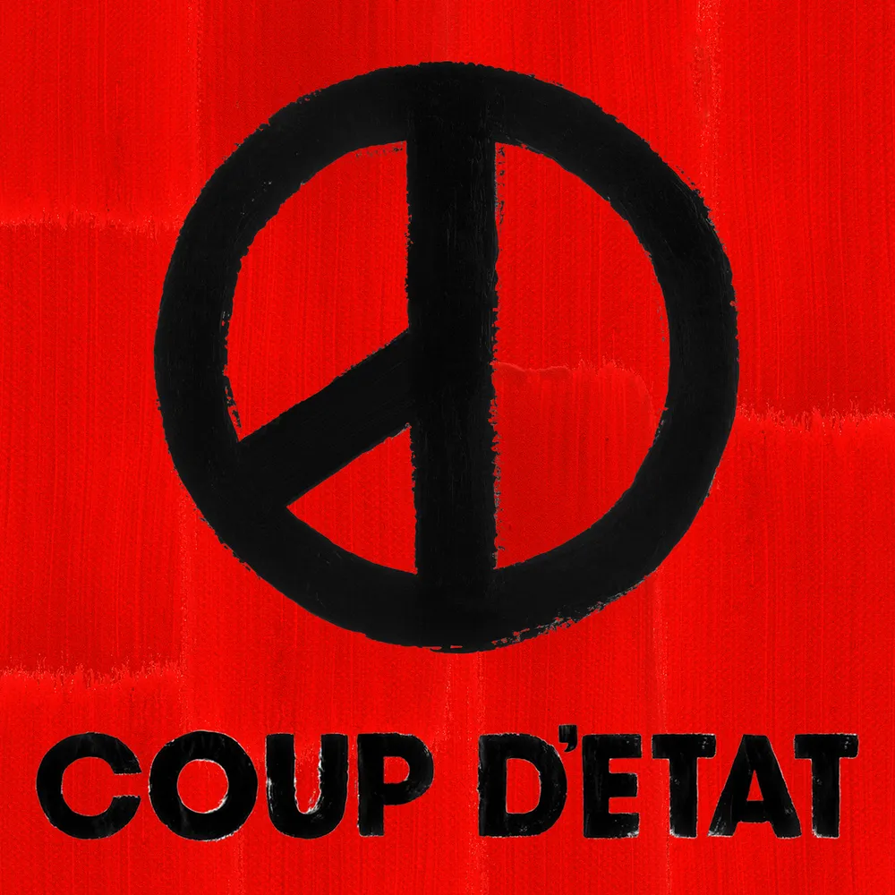
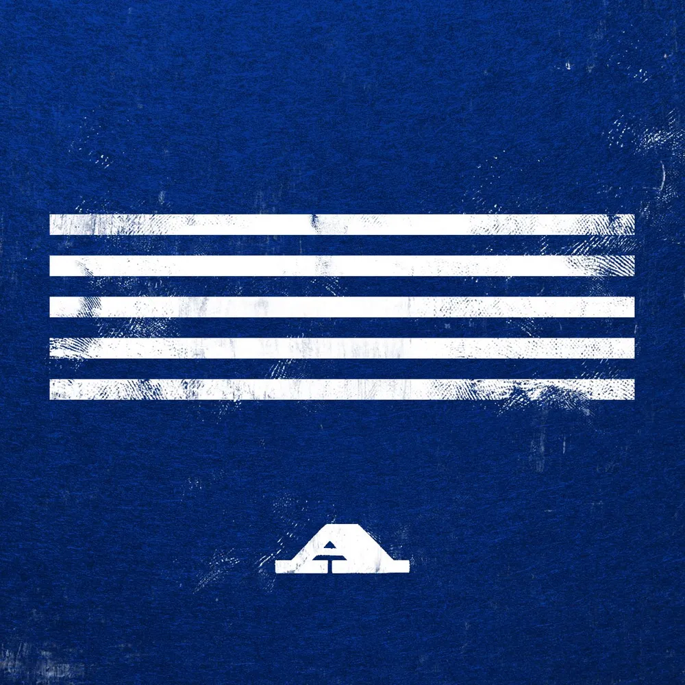

▶ 유튜브에서 보기
삐딱하게
G-DRAGON
청춘의 감정을 담은 힙합곡으로, 신나는 반주로 기분 전환이 필요할 때 마다 생각나는 곡이며 영원한 건 절대 없다는 가사가 인상적인 노래이다.

▶ 유튜브에서 보기
뱅뱅뱅
BIGBANG
전형적인 빅뱅 스타일의 히트 댄스곡으로, 힘든일이 있거나 우울할 때 항상 텐션을 올려주고 하기 싫은 일을 하기 전 할 의지를 북돋아 주는 노래이다.

예술이야
PSY
흥이 넘치는 축제 분위기의 곡으로, 흠뻑쇼에서 물을 맞으며 하이라이트를 들을 때의 기억을 항상 떠올리게 하는 노래이다.